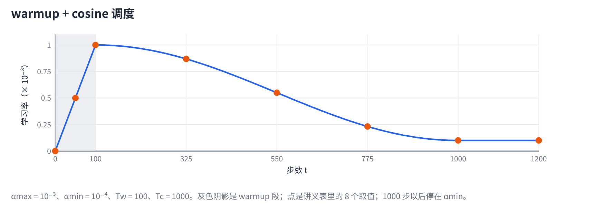
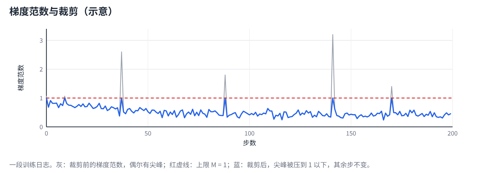

第 4 章 · 学习率调度与梯度裁剪：步子怎么排、梯度太大怎么办
本地运行
git clone https://github.com/wikieden/beyond-transformer
cd beyond-transformer/code/notebooks
pip install jupyterlab torch numpy
jupyter lab ch04_lr_schedule.ipynb也可以下载后直接用 VS Code 打开 .ipynb 运行。需要 GPU 的章节在 Colab 里选「代码执行程序 → 更改运行时类型 → GPU」。
本章回答：为什么训练时学习率不是一个固定的数，而是先升后降？warmup（预热）在防什么？cosine（余弦）退火的公式怎么读？偶尔一个 batch 的梯度特别大，把训练带崩了，梯度裁剪怎么把它压住？裁剪是一个参数一个参数地裁，还是整体裁？
讲解日期：2026-11-25 · 上一章：第 3 章 优化器 · 下一章：第 5 章 一次完整训练
对应原文：CS336 a1 handoutcs336-spring2025/materials/text/cs336_spring2025_assignment1_basics.txt§4.4 L1610–L1630（warmup + cosine 的三段公式）、§4.5 L1648–L1655（按全局 ℓ2 范数裁剪，ε = 10⁻⁶）；AIAYNtransformer-deep-dive/materials/text/papers/attention-is-all-you-need-1706.03762.txt§5.3 式 3 L363–L376（原版的 warmup + 按 step^{-0.5} 衰减）
本章缩写：lr = learning rate（学习率）；αmax、αmin = 最大、最小学习率；Tw = warm-up 步数（预热步数）；Tc = cosine annealing 步数（余弦退火结束的那一步）；cosine annealing（余弦退火：学习率按余弦曲线从高降到低）；ℓ2 范数（L2 norm：各分量平方和再开根号，也就是向量的长度）；M = max norm（梯度范数的上限）；WSD = Warmup-Stable-Decay（预热 / 平稳 / 衰减三段式调度）。全部缩写见 附录 · 缩写与术语表
讲解
第一步：warmup + cosine：先慢慢加速，再慢慢刹车（2026-11-25）
类比：开车。 刚上路先慢慢加速（引擎还没热，路况也不熟）；上了高速开得最快；快到目的地慢慢减速，好停准位置。学习率也是这样：开头小、中段大、结尾小。
a1 §4.4（L1619–L1630）的三段公式：
怎么读中间那段：\(\frac{t - T_w}{T_c - T_w}\) 是“退火走完了几成”，从 0 走到 1；乘 π 后 cos 从 1 走到 −1；\(\frac12(1 + \cos)\) 就从 1 平滑地降到 0；再按比例放到 αmax 和 αmin 之间。
数字演示（αmax = 10⁻³、αmin = 10⁻⁴、Tw = 100、Tc = 1000）：
| t | 0 | 50 | 100 | 325 | 550 | 775 | 1000 | 1200 |
|---|---|---|---|---|---|---|---|---|
| 退火走了几成 | — | — | 0 | 0.25 | 0.5 | 0.75 | 1 | — |
| αt（× 10⁻³） | 0 | 0.5 | 1.0 | 0.868 | 0.55 | 0.232 | 0.1 | 0.1 |
退火走到一半（t = 550）时，学习率正好在两端的中点 0.55 × 10⁻³。余弦曲线开头和结尾都平、中间陡：刚过峰值时降得慢，最后一段也降得慢，让模型在低学习率下“精修”一段时间。
原版 Transformer 用的是另一种：\(d_{\text{model}}^{-0.5}\min(\text{step}^{-0.5}, \text{step}\cdot\text{warmup}^{-1.5})\)（AIAYN 式 3，L363–L376），先线性升，再按 1/√step 慢慢降（第 11 章用源码算一遍）。现在还常见 WSD：预热后保持不变，最后 10–20% 的步数快速降下来，好处是可以中途决定训多久（见《数学与实验统计》第 43 章）。

图 4-1 · αmax = 10⁻³、αmin = 10⁻⁴、Tw = 100、Tc = 1000 的学习率曲线。灰色阴影是 warmup 段；点是表里的 8 个取值；1000 步以后停在 αmin一句话：学习率先在 Tw 步里从 0 线性升到 αmax，再按余弦曲线在 Tc 步时降到 αmin，之后保持不变。
第二步：为什么要 warmup（2026-11-25）
刚开始训练时有两个问题：
- 参数是随机的，梯度方向乱、大小也不稳：一上来就用大学习率，可能一步就把模型推到很差的地方，之后很难回来。
- Adam 的 v̂ 还没估准：第 3 章说 Adam 每一步除以 \(\sqrt{\hat v}\)。前几步 v̂ 只看了很少几个梯度，可能偶然很小，一除步子就特别大。
数字演示（梯度服从均值 0.1、标准差 1 的正态分布，真实的 √E[g²] ≈ 1.005；重复 2000 次，看 √v̂ 的 90% 范围）：
| 只看了几步 | √v̂ 的 90% 范围 |
|---|---|
| 1 | [0.061, 1.922] |
| 5 | [0.505, 1.497] |
| 50 | [0.839, 1.165] |
| 500 | [0.952, 1.057] |
第 1 步时 √v̂ 有 5% 的可能小于 0.061，这时步长被放大 16 倍以上。warmup 让这几步的学习率也很小，等 v̂ 估准了再放开。还有一个原因是结构上的：原版的 Post-LN 在开头输出层附近梯度很大，离开 warmup 就训不动（第 12 章讲 Pre-LN 时细说）。
一句话：开头参数随机、Adam 的 v̂ 也没估准，大学习率容易一步走坏；warmup 让最初几百步走小步。
第三步：梯度裁剪：按全局长度整体缩小（2026-11-25）
类比：限速。 平时开多快都行，超过限速就整体按比例降到限速以下，方向不变。
a1 §4.5（L1648–L1655）：把所有参数的梯度拼成一个大向量 g，算它的长度（ℓ2 范数）：
数字演示（M = 1，ε = 10⁻⁶）：
| 梯度 | 范数 | 缩放系数 | 裁后 |
|---|---|---|---|
| [3, 4] | 5 | 0.2 | [0.6, 0.8] |
| [0.3, 0.4] | 0.5 | 1（不动） | [0.3, 0.4] |
| 参数 1：[3, 0]；参数 2：[[0, 4], [0, 0]] | 5（合起来算） | 0.2 | [0.6, 0]；[[0, 0.8], [0, 0]] |
第三行是两个参数：各自的范数是 3 和 4，单独裁的话参数 2 被压得更多，梯度的方向就变了。整体裁剪只改长度、不改方向：模型这一步仍然往“正确的方向”走，只是走得没那么猛。裁后范数是 1/(1 + 10⁻⁶)，略小于 M（L1655）。
大模型训练常取 M = 1.0。梯度范数是训练日志里最该盯的曲线之一：偶尔的尖峰被裁掉没关系；如果几乎每步都在裁，说明学习率太大或训练已经不稳了（第 18 章的 logit 发散）。

图 4-2 · 一段训练日志里的梯度范数（示意）。灰线是裁剪前，偶尔有尖峰；红虚线是上限 M = 1；蓝线是裁剪后，尖峰被压到 1 以下，其余不变场景代码：PyTorch 训练循环里的调度和裁剪（真实库调用；本书环境没装 torch，没跑过）：
sched = torch.optim.lr_scheduler.LambdaLR(opt, lambda t: lr_fn(t) / opt.defaults["lr"]) # lr_fn 是第一步的三段公式
loss.backward()
gnorm = torch.nn.utils.clip_grad_norm_(model.parameters(), max_norm=1.0) # 返回裁剪前的总范数，记进日志
opt.step(); sched.step(); opt.zero_grad()
一句话：梯度裁剪把所有参数的梯度当一个向量，长度超过 M 就整体按比例缩到 M，方向不变；裁剪前的范数要记进日志。
动画演示：学习率曲线和梯度裁剪

可交互版：animations/04-lr-schedule.html（滑块：当前步 t、warmup 步数 Tw；右边拖梯度的长度看裁剪）。
怎么看：
- 左边是学习率曲线，红点是当前步 t，右上角写出当前的 αt（第一步）；
- 把 Tw 拉长：上升段变缓，余弦段变短；
- 右边：灰色箭头是原梯度，蓝色箭头是裁剪后的；长度超过圆圈（M = 1）就被缩回圆上，方向不变（第三步）。
练习与作答记录
题 1（第一步）：αmax = 6 × 10⁻⁴、αmin = 6 × 10⁻⁵、Tw = 200、Tc = 2000。t = 100、t = 1100、t = 3000 时学习率各是多少？
题 2（第二步）：不用 warmup、第 1 步就用 αmax，Adam 第 1 步每个参数走多远（用第 3 章的偏差修正）？为什么说“第 1 步的步长和梯度大小无关”在这里反而是个问题？
题 3（第三步）：两个参数的梯度是 [6, 8] 和 [0, 0]，M = 5。整体裁剪后各是多少？如果改成每个参数单独裁到 5，结果一样吗？
口诀
先热身、再全速、最后慢慢刹：线性升到峰，余弦降到底，之后停在最低。
退火走一半，学习率在中点。
开头梯度乱、v̂ 不准，warmup 走小步。
所有梯度拼一条，超长就按比例缩，方向不变；裁前范数记日志。
本章复习卡片
必背：B24–B25（B24 warmup + cosine 的三段公式与 warmup 的理由；B25 按全局 ℓ2 范数的梯度裁剪）。练习做完后，按答错、卡住的地方再补。
附录 · 延伸阅读
留给以后深入学习用，不影响本章主线。★ 是建议先读的。
推荐阅读
| 读什么 | 读哪里 | 读它为了什么 |
|---|---|---|
| ★ CS336 a1 handout | §4.4 L1610–L1630；§4.5 L1648–L1655 | 作业里的调度公式和裁剪规则 |
| ★ AIAYN | §5.3 式 3 L363–L376 | 原版的 warmup + 1/√step 调度 |
| SGDR（Loshchilov & Hutter 2016） | 全文（本地没有文本版） | 余弦退火和 warm restarts 的出处 |
| 《数学与实验统计》第 43 章、第 44 章 | WSD 调度；训练稳定性 | 现代调度和 loss 尖峰 |
| 本书 第 11 章 | rate() 函数 | 原版调度的代码实现 |
数学原理
- 余弦退火：\(\frac12(1 + \cos(\pi s))\) 在 s = 0、1 处导数为 0，开头结尾都平滑。
- v̂ 的估计误差：只看 k 个样本时，v̂ 的相对标准差约 √(2/k)（正态梯度的平方是卡方分布）。
- 整体裁剪保方向：g 乘一个正数 c，方向不变，长度变成 c‖g‖。
- 裁剪 vs 降学习率：整体裁剪等价于这一步的学习率乘 M/‖g‖，只在梯度过大时生效。
公式清单
| 公式 | 意思 |
|---|---|
| \(\alpha_t = \frac{t}{T_w}\alpha_{\max}\)（t < Tw） | warmup |
| \(\alpha_t = \alpha_{\min} + \frac12(1 + \cos(\frac{t - T_w}{T_c - T_w}\pi))(\alpha_{\max} - \alpha_{\min})\) | 余弦退火 |
| \(\alpha_t = \alpha_{\min}\)（t > Tc） | 退火后 |
| \(d^{-0.5}\min(\text{step}^{-0.5}, \text{step}\cdot\text{warmup}^{-1.5})\) | 原版 Transformer 的调度 |
| \(g \leftarrow g\cdot M/(\lVert g\rVert_2 + \varepsilon)\)（‖g‖ > M 时） | 梯度裁剪 |
代码对照：把本章的数字用代码算一遍
NumPy。代码在仓库本地
beyond-transformer/solutions/chapter-code/ch04_lr_schedule.py，配套测试tests/test_ch04.py，notebook 在notebooks/ch04_lr_schedule.ipynb：
bash cd beyond-transformer/solutions/chapter-code uv run python ch04_lr_schedule.py uv run pytest tests/test_ch04.py
讲义 ↔ 代码：
| 讲义 | 公式 | 写法 | 跑出来 |
|---|---|---|---|
| 第一步 调度 | 三段公式 | lr_at(t) |
t = 550 → 5.5e-4 |
| 第二步 v̂ 的噪声 | 滑动平均 | early_v_noise() |
1 步 [0.061, 1.922] → 500 步 [0.952, 1.057] |
| 第三步 裁剪 | 整体缩放 | clip(grads) |
[3, 4] → [0.6, 0.8] |
关键几行：
if t < tw: return t / tw * amax # warmup
if t <= tc: return amin + 0.5 * (1 + math.cos((t - tw) / (tc - tw) * math.pi)) * (amax - amin)
norm = math.sqrt(sum(float((g * g).sum()) for g in grads)) # 所有参数拼起来的长度
return [g * (max_norm / (norm + eps)) for g in grads] # 超了就整体缩
代码里才看得到的 2 件事：
- 边界的等号：a1 写的是 t < Tw 走 warmup、Tw ≤ t ≤ Tc 走余弦，所以 t = Tw 时正好是 αmax，t = Tc 时正好是 αmin，两段接得上。
- 这里只是把公式代进去：作业的
get_lr_cosine_schedule和原地修改梯度的gradient_clipping两个 adapter 留给自己写。
自己改一改（不影响练习答案）：
- 把
lr_at的 αmin 改成 0，曲线的后半段怎么变？ - 把
early_v_noise里的梯度均值从 0.1 改成 2，第 1 步的范围还那么宽吗？